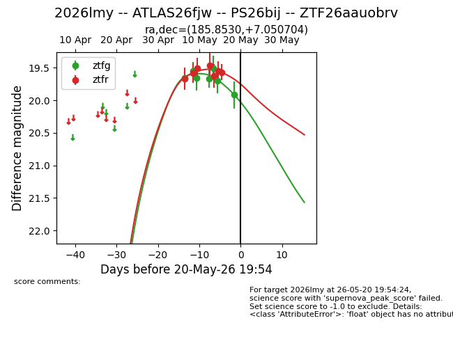
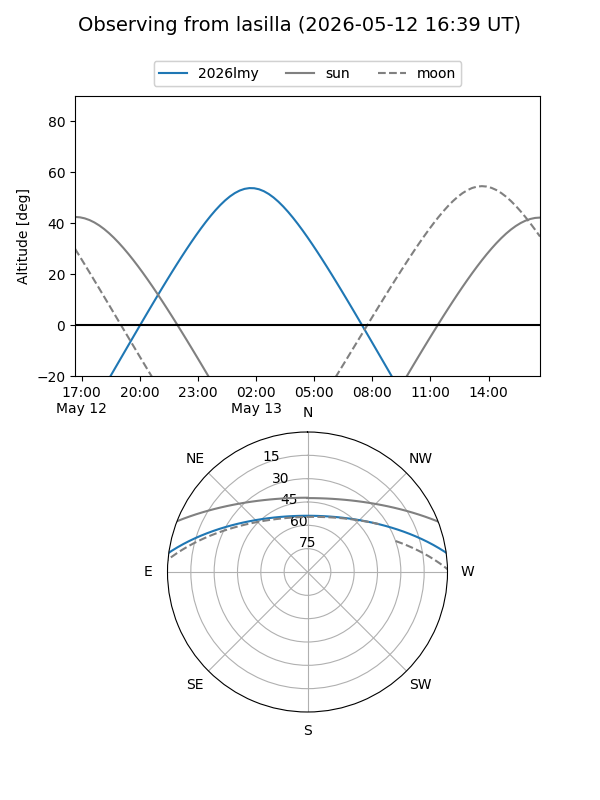
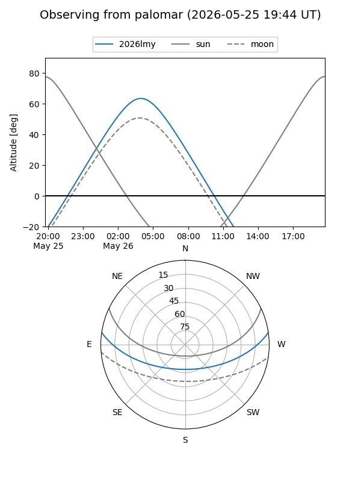
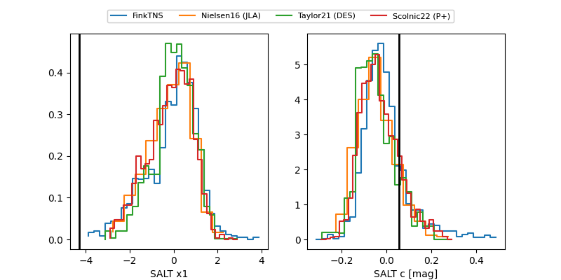

2026lmy
Target 2026lmy at 2026-05-20 19:56
Aliases and brokers:
FINK: link
Lasair: link
ALeRCE: link
TNS: link
YSE: link
alt names
ZTF26aauobrv (ztf,fink_ztf)
2026lmy (tns,yse)
ATLAS26fjw (atlas)
PS26bij (panstarrs)
Coordinates:
equatorial (ra, dec) = 185.8530,+7.05070
equatorial (HMS+DMS) = 12:23:24.72,+07:03:02.53
galactic (l, b) = (283.3286,+68.84904)
Flags:
Photometry:
last ztfg=19.92, ztfr=19.57
7 ztfg, 7 ztfr detections
Lightcurve

Visibility


Additional plots
